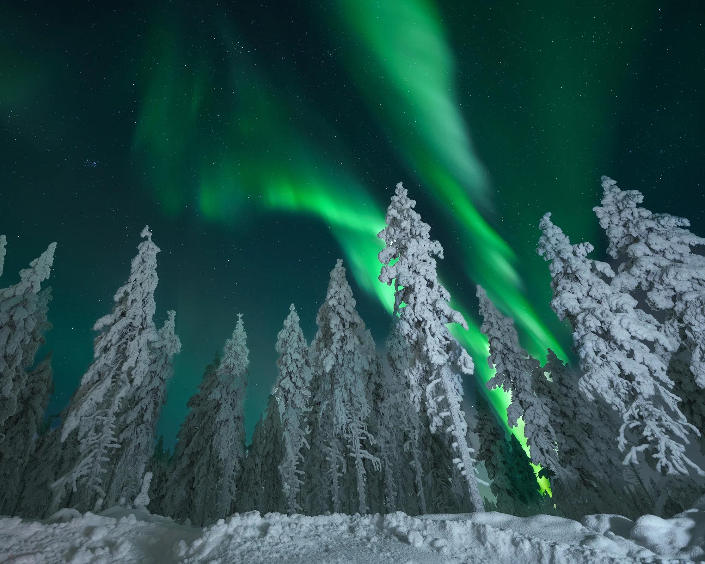
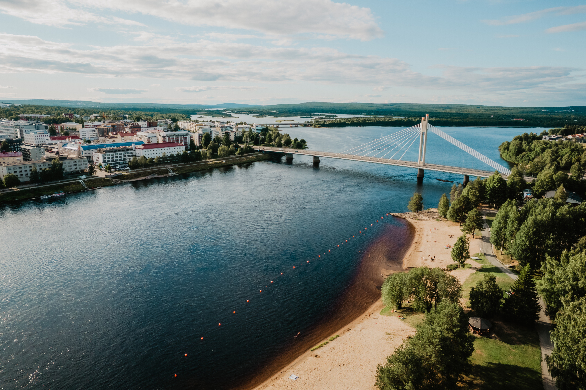
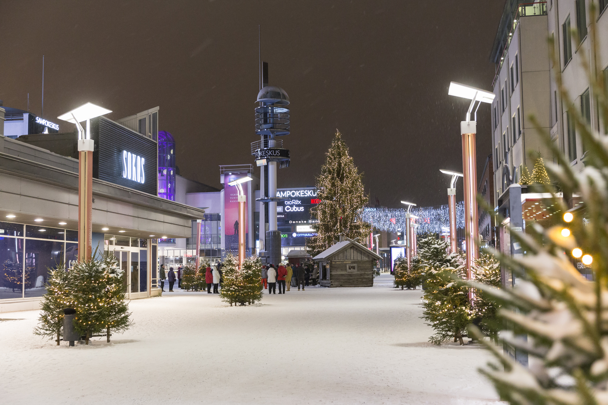

Rovaniemi
Rovaniemi is the capital of Finnish Lapland and the official hometown of Santa Claus. It is famous for snowy winters, northern lights, reindeer experiences, and unforgettable Arctic adventures.



Rovaniemi is the capital of Finnish Lapland and the official hometown of Santa Claus. It is famous for snowy winters, northern lights, reindeer experiences, and unforgettable Arctic adventures.